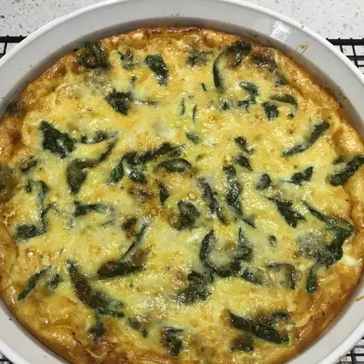

Spinach, Mushroom and Tomato Quiche Recipe

Crustless Spinach, Mushroom, and Tomato Quiche
Ingredients
- cooking spray
- 1 tablespoon butter
- 1 onion, sliced
- ½ cup halved cherry tomatoes
- 1 cup sliced mushrooms
- 2 cups fresh spinach
- 1 cup heavy cream
- 3 eggs
- ½ teaspoon salt
- ¼ teaspoon ground black pepper
- ¼ teaspoon ground nutmeg
- 1 cup shredded Gouda cheese
Steps
- Preheat the oven to 375 degrees F (190 degrees C). Grease a 9-inch pie plate with cooking spray.
- Melt butter in a medium cast iron skillet over medium heat. Add onion; cook and stir until softened and translucent, about 5 minutes. Stir in cherry tomatoes until slightly softened, about 3 minutes. Add mushrooms and cook until tender, about 3 minutes. Mix in spinach; cook for 1 minute more.
- Whisk cream, eggs, salt, pepper, and nutmeg together in a bowl.
- Spread 1/2 of the Gouda cheese in the prepared pie plate and top with spinach mixture. Cover with egg mixture and sprinkle remaining Gouda cheese on top.
- Bake in the preheated oven until eggs are set and top is golden, about 25 minutes.